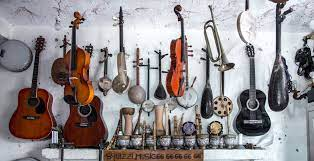
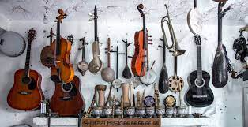

| ALGUNOS ESTILOS DEL REGUETON |
CARACTERISTICAS DE CADA UNO DE ELLOS |
IMAGEN DE CADA ESTILO |
| REGGAE |
El reggae es un género musical originado en Jamaica en los años 60.
Esta se suele dividir en Ska, Rocksteady, Reggae y Dancehall. |
|
| MERENGUE |
El merengue es un género musical bailable originado en la República Dominicana a finales del siglo XIX. Es muy popular en todo el continente americano, donde es considerado, junto con la salsa,
como uno de los grandes géneros musicales bailables que distinguen el género americano.. |
|
| MUSICA URBANA |
Traducción del inglés-La música urbana o urbana latina es una categoría general transnacional que incluye muchos géneros y estilos diferentes. Como término general incluye reguetón, dancehall, dembow, champeta urbana, funk carioca,
hip hop latino y trap latino. El avance comercial de esta música tuvo lugar en 2017 |
 |
| HIP HOP. |
Traducción del inglés-La música hip hop, también conocida como música rap, es un género de música popular desarrollado en los Estados Unidos por afroamericanos y lati
noamericanos de los barrios marginales de la ciudad de Nueva York en la década de 1970. |
|


 
